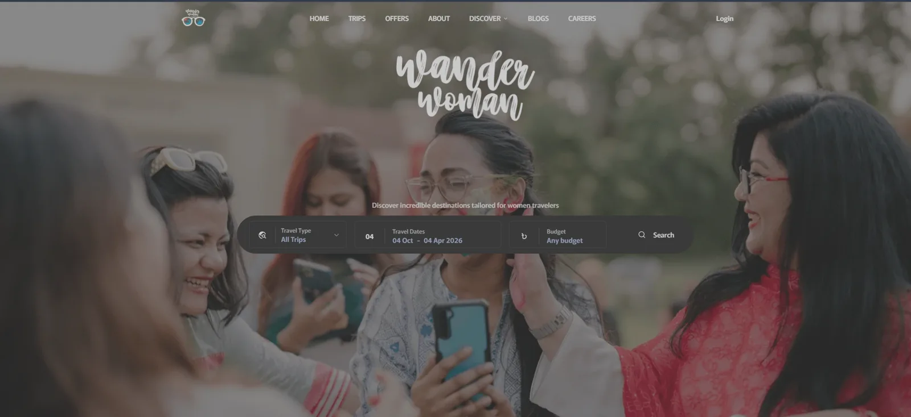

Wander Woman
A large-scale travel platform unifying customer bookings, installment payments, trip operations, and internal CRM, CMS, and HRMS workflows.
ROLE
Sole backend developer — architecture, implementation, infrastructure, CI/CD, and selected Next.js modules.
- Booking and installment-payment workflows
- Event-driven application architecture
- 1.5K–2K daily active traffic